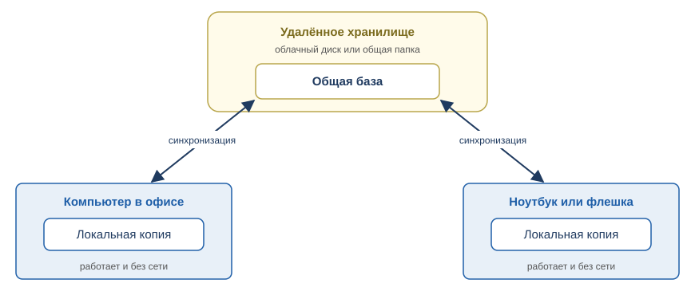
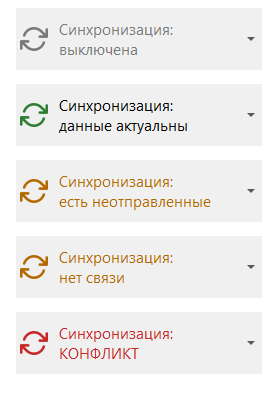
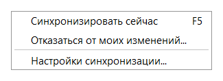
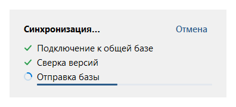
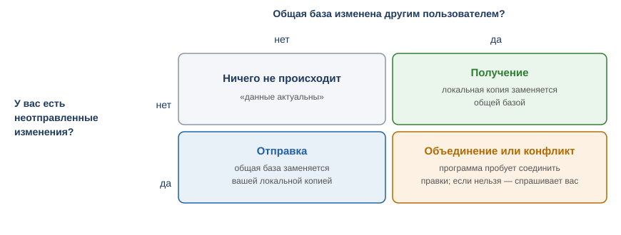
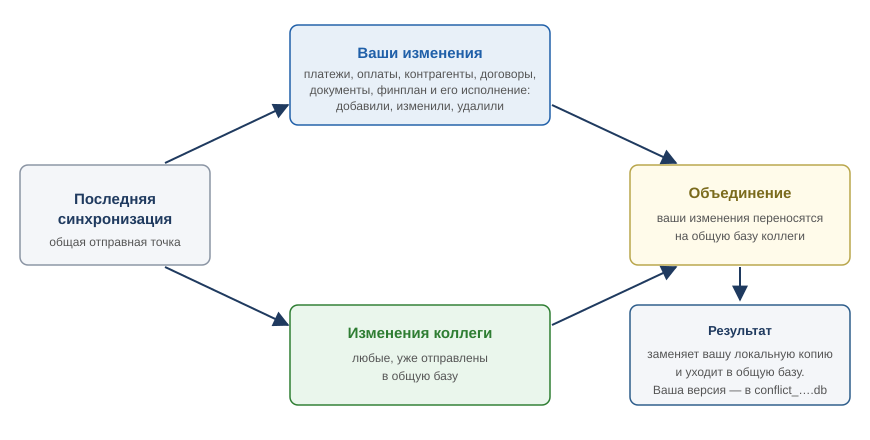
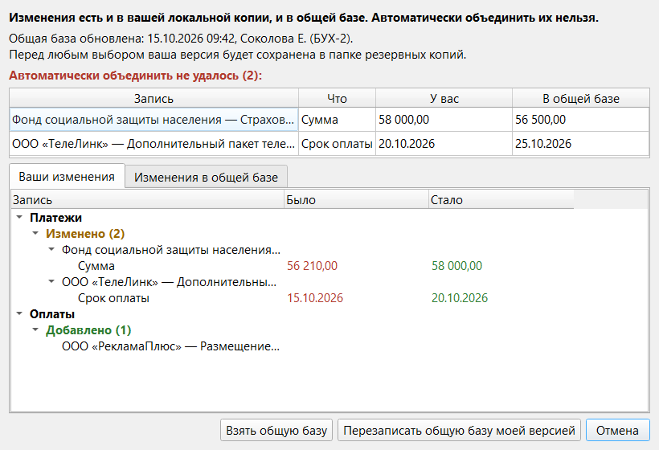
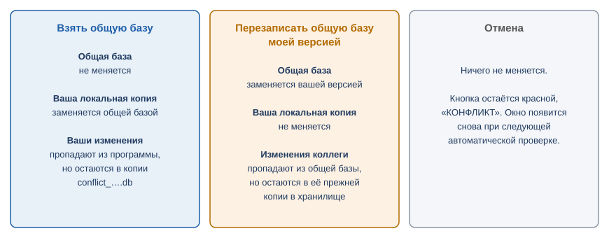
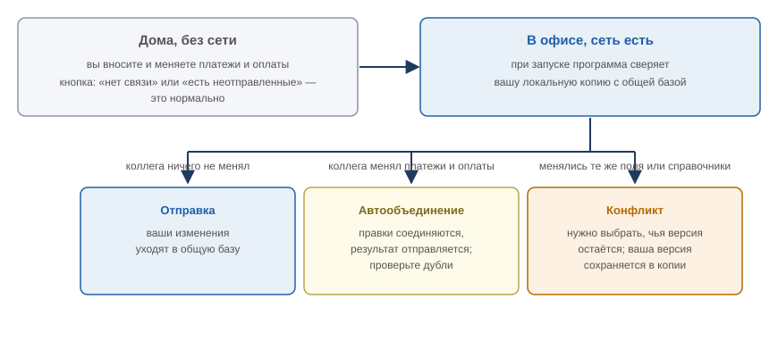

Раздел 15. Синхронизация между устройствами |
Синхронизация нужна, если с программой работают на нескольких устройствах или несколько человек. Программа сама следит, чтобы у всех были одни и те же данные, и сообщает, если что-то нужно решить вам.
Настройка подключения (способ обмена, доступ к хранилищу, имя пользователя) выполняется один раз. Эти значения вам должен сообщить ответственный за программу. Как подключить устройство впервые — в приложении 2.
Как это устроено |
У каждого устройства своя локальная копия базы. Это обычная база программы: с ней можно работать без сети. Кроме того, в хранилище (Яндекс.Диск или общая папка) лежит одна общая база. Программа сверяет локальную копию с общей базой и переносит изменения в нужную сторону.

Рис. 49. Каждое устройство работает со своей копией и обменивается изменениями через общую базу.
Изменения доходят до другого пользователя только через общую базу: пока вы их не «отправили», коллега их не увидит.
Синхронизируется вся база: платежи, оплаты, контрагенты, договоры, финансовый план и исполнение плана, а также «Календарь», «Парсер выписки» и «Персонал» из окна «Настройки» (раздел 13). «Отображение», «Таблица», «Хранение» и настройки синхронизации на каждом устройстве свои.
Кнопка синхронизации |
Кнопка справа на панели инструментов показывает состояние и запускает синхронизацию. Стрелка справа от неё открывает меню: «Синхронизировать сейчас», «Отказаться от моих изменений…» и «Настройки синхронизации…».

Рис. 50. Состояния кнопки синхронизации: «выключена», «данные актуальны», «есть неотправленные», «нет связи», «КОНФЛИКТ».
Если синхронизация выключена, нажатие на кнопку открывает окно настроек. В подсказке видны время последней проверки, дата и автор последней отправки, а при проблеме и её причина.

Рис. 51. Меню кнопки синхронизации. «Отказаться от моих изменений…» доступно, когда есть неотправленные изменения (см. «Отказ от своих изменений»).
| Надпись на кнопке | Цвет | Что значит | Что делать |
|---|---|---|---|
| выключена | серый | Синхронизация не включена | Включите её в окне настроек, если нужно (данные для него у ответственного за программу) |
| данные актуальны | зелёный значок | Ваша локальная копия совпадает с общей базой | Ничего |
| есть неотправленные | оранжевый | Вы внесли изменения, они ещё не в общей базе | Подождите: программа отправит их сама, или нажмите кнопку. Если изменения не нужны, откажитесь от них (см. «Отказ от своих изменений») |
| общей базы нет | оранжевый | В хранилище ещё нет общей базы | Создайте её (приложение 2) |
| нет связи | оранжевый | Хранилище недоступно | Работайте дальше. Программа повторит попытку сама, см. «Работа без сети» |
| общая база обновляется | оранжевый | Другой пользователь как раз отправляет изменения | Подождите минуту и нажмите кнопку ещё раз |
| КОНФЛИКТ | красный | Изменения есть и у вас, и в общей базе, объединить их автоматически нельзя | Нажмите кнопку и выберите, чьи данные оставить (см. «Конфликт») |
| в общей базе другие данные | красный | В хранилище лежит общая база, не связанная с вашей локальной копией | Не отвечайте «Да» наугад (приложение 2): уточните у ответственного за программу |
| обновите программу | красный | Общая база создана более новой версией программы | Обновите программу (раздел 16). До этого ничего не меняется |
| токен недействителен | красный | Доступ к хранилищу не принят | Обратитесь к ответственному за программу |
| ошибка | красный | Другая ошибка, подробности в подсказке | См. «Что может пойти не так» |
| прервана | оранжевый | Вы нажали «Отмена» в окне синхронизации | Ничего делать не нужно: данные не изменились. Чтобы повторить, нажмите кнопку |
Знак ⚠ после надписи или оранжевая надпись при «данные актуальны» говорят, что есть замечание: общая база давно не обновлялась или скоро истекает доступ к хранилищу. Причина указана в подсказке (см. «Предупреждения программы»).
Когда синхронизация запускается |
Автоматическая синхронизация пропускается, пока открыто окно с вопросом или настройками либо идёт другая синхронизация; попытка повторится при следующей проверке.
На время синхронизации появляется окно с этапами, а кнопка недоступна. Автоматическая проверка по таймеру и после паузы идёт тихо (в строке состояния «Идет синхронизация...»): окно появляется, только если проверка затянулась больше чем на 3 секунды или нужно скачать общую базу. При медленной сети программа может на несколько секунд перестать отзываться — дождитесь окончания.

Рис. 52. Окно синхронизации: этапы, полоса передачи базы и кнопка «Отмена».
Если этап затягивается, появляется кнопка «Отмена», а при передаче базы — полоса передачи. При сбое связи запрос повторяется сам, рядом с этапом пишется, например, «(попытка 2/4)».
«Отмена» (или Esc) прерывает синхронизацию без потери данных: локальная копия остаётся целой, в общей базе либо ничего не меняется, либо отправка уже завершена; на кнопке появляется «прервана». Пока записываются итоговые файлы общей базы (последний шаг отправки), «Отмена» неактивна.
Что делает программа при проверке |
Программа смотрит на два вопроса: изменил ли общую базу кто-то другой с момента вашей последней синхронизации и есть ли у вас неотправленные изменения. От ответов зависит, что произойдёт.

Рис. 53. Четыре возможных исхода проверки.
Ничего не происходит, на кнопке «данные актуальны».
Ваша локальная копия заменяет общую базу; на кнопке «данные актуальны». Перед заменой в хранилище сохраняется копия прежней общей базы (см. «Копии общей базы»).
Ваша локальная копия заменяется общей базой. Программа сообщает: «Данные были изменены другим пользователем. Программа обновлена по актуальной версии», указывает время и автора изменений и показывает, что добавлено, изменено и удалено (столбцы «Запись», «Было», «Стало»); по календарю, парсеру выписки и персоналу — только число изменённых строк.
Перед заменой ваша прежняя локальная копия всегда сохраняется в data\backup как before_sync_… (раздел 14): данные заменяются целиком без вашего решения.
Возможны два исхода: программа объединит изменения сама или потребует вашего решения.
Программа объединяет изменения без вашего участия, если выполнены оба условия:
Конфликтом также считается, если:

Рис. 54. Ваши изменения переносятся на общую базу, уже содержащую изменения коллеги.
Что при этом происходит:
data\backup как conflict_… и не удаляется сама (раздел 14).Программа показывает окно «Пока вы работали, общая база была изменена другим пользователем … Ваши изменения объединены с ними и отправлены в общую базу» с вкладками «Изменения другого пользователя» и «Ваши изменения».
Проверьте блок «Проверьте после объединения (N):», если он есть. В нём программа предупреждает о возможных последствиях объединения:
| Предупреждение | Как могло получиться | Что делать |
|---|---|---|
| Возможный дубль контрагента | Вы и коллега добавили контрагента с одним названием | Оставьте одного: перенесите договоры и удалите лишнего |
| Возможный дубль договора | Вы и коллега добавили договор с тем же номером и датой у одного контрагента | Оставьте один договор |
| Возможный дубль документа | Вы и коллега добавили документ с тем же названием в один договор | Оставьте один документ |
| Возможный дубль платежа | Вы и коллега добавили один и тот же платеж | Откройте оба платежа и удалите лишний |
| Возможный дубль оплаты | Вы и коллега отметили одну и ту же оплату | Удалите лишнюю оплату |
| Оплачено больше суммы платежа | Вы и коллега отметили оплаты по одному платежу, вместе они превысили сумму | Проверьте оплаты платежа и исправьте лишнюю |
Предупреждения только подсказывают, куда посмотреть: программа ничего не исправляет сама.
Если автоматически объединить нельзя (пересеклись правки, либо вы меняли «Календарь», «Парсер выписки» или «Персонал»), кнопка становится красной «КОНФЛИКТ» и открывается окно «Конфликт синхронизации».

Рис. 55. Окно «Конфликт синхронизации».
В окне:
data\backup как conflict_…;Выбрать нужно одну из трёх кнопок:

Рис. 56. Что происходит при каждом выборе.
| Кнопка | Когда выбирать |
|---|---|
| Взять общую базу | Верна версия коллеги или ваши изменения не важны. Если часть ваших правок нужна, откройте conflict_… (см. ниже) и перенесите их вручную |
| Перезаписать общую базу моей версией | Верна ваша версия, и изменения коллеги можно потерять. Это затронет всех пользователей: на их устройствах данные заменятся вашими |
| Отмена | Нужно время подумать или посоветоваться. Ничего не меняется, окно появится снова при следующей автоматической проверке |
Если сомневаетесь, нажмите «Отмена», сравните вкладки и свяжитесь с коллегой. Отправлять свои изменения до решения нельзя.
|
⚠️ Внимание. «Перезаписать общую базу» нельзя отменить в программе. Если вы ошиблись, обратитесь к ответственному за программу: в хранилище остаётся копия прежней общей базы (подраздел «Копии общей базы»). |
Как вернуть данные из conflict_…. Это обычная копия базы: её можно восстановить, как любую другую (раздел 14), но восстановленные данные снова будут вашими неотправленными изменениями, и конфликт может повториться. Если нужны только отдельные платежи, восстановите копию на отдельном устройстве или попросите ответственного за программу перенести нужное.
Отказ от своих изменений |
Если вы поняли, что изменения не нужны (например, внесли платежи «на пробу»), не ждите конфликта: выберите в меню кнопки «Отказаться от моих изменений…» (доступно при «есть неотправленные» и «КОНФЛИКТ»).
Программа спросит подтверждение. После «Да» ваша версия записывается в data\backup как discarded_…, а локальная копия заменяется общей базой — как «Взять общую базу» в окне конфликта. Сообщения об успехе нет: кнопка станет «данные актуальны».
|
⚠️ Внимание. После подтверждения вернуть изменения кнопкой в программе нельзя; их можно найти в копии |
Работа без сети |
Сеть нужна только на время синхронизации: всё остальное время вы работаете со своей локальной копией.
Если связи нет, кнопка показывает «нет связи». Программа автоматически повторит попытку (через 30 секунд, всего три попытки), сообщая об этом в строке состояния и в подсказке кнопки, затем продолжит проверки по обычному расписанию.

Рис. 57. Изменения, сделанные без сети, отправляются или объединяются, когда связь появилась.
Что делать, если вы работали дома без сети:
|
⚠️ Внимание. Данные не пропадают, но пока вы не отправили изменения, коллега их не видит; чем дольше вы без синхронизации, тем выше шанс конфликта. |
Разные версии программы |
Когда программу обновляют, общую базу первым обновляет тот, у кого новая версия. Остальные видят «обновите программу», и синхронизация для них приостанавливается без изменения данных: обновите программу (раздел 16). До обновления работать можно, изменения отправятся после него.
Копии общей базы |
Чтобы можно было вернуть данные, если общую базу заменили по ошибке, программа сохраняет в хранилище копии прежней общей базы:
Эти копии не видны в программе: за доступом к ним обращайтесь к ответственному за программу.
Предупреждения программы |
Параметры |
Окно «Настройки синхронизации…» открывается из меню кнопки; кроме данных подключения там есть параметры, которые можно менять.
| Параметр | Что меняет | Значение по умолчанию и совет |
|---|---|---|
| Проверять общую базу каждые | Как часто программа сама проверяет общую базу и принимает чужие изменения | 5 мин |
| Отправлять изменения после бездействия | Через сколько секунд без нажатий клавиш и мыши программа отправляет ваши изменения | 60 с; «выкл» — изменения уйдут при следующей проверке по таймеру или при закрытии |
| Хранить ежедневные копии общей базы | Сколько дней хранятся ежедневные копии общей базы | 60 дн. |
| Копировать общую базу при отправке не чаще, чем раз в | Как часто создаются короткие копии | 30 мин; «каждый раз» делает копию при каждой отправке |
Как не потерять данные |
data\backup.Что может пойти не так |
| Что вы видите | Что случилось | Что делать |
|---|---|---|
| «Не удалось выполнить синхронизацию: Нет связи с сервером: …» (кнопка «нет связи») | Нет интернета или хранилище временно недоступно | Работайте дальше, программа повторит попытку. Если не проходит долго, проверьте интернет |
| «Токен недействителен или истёк. Получите новый у ответственного за программу и укажите его в настройках синхронизации» (кнопка «токен недействителен») | Доступ к удалённому хранилищу закончился или отозван | Обратитесь к ответственному за программу |
| «Не удалось загрузить общую базу: …» (после «Отказаться от моих изменений…») | Нет связи или хранилище недоступно | Ничего не изменилось. Повторите позже |
| «Нет доступа к Яндекс.Диску: проверьте токен и права приложения» | У программы нет прав на нужную папку | То же |
| «На Яндекс.Диске недостаточно места» | В хранилище нет места | Освободите место на диске |
| «Ресурс на Яндекс.Диске заблокирован, повторите позже» | Хранилище временно занято | Повторите через несколько минут |
| «Общая база обновляется: файл базы данных и master.json не совпадают, повторите позже» (кнопка «общая база обновляется») | Другой пользователь отправляет изменения в этот момент | Подождите минуту и нажмите кнопку ещё раз |
| «Общая база создана более новой версией программы. Обновите программу. Ничего не изменено» | Коллега уже обновил программу | Обновите программу (раздел 16) |
| «Файл общей базы не найден» / «В общем хранилище нет базы данных» | Общую базу удалили или её нет по указанному пути | Проверьте путь в настройках; если база удалена, создайте её заново (приложение 2) |
| «Скачанная общая база не прошла проверку целостности» / «Скачанная общая база не соответствует master.json» | Файл загрузился не полностью или повреждён | Повторите синхронизацию. Если повторяется, обратитесь к ответственному за программу |
| «Не удалось сохранить локальную копию перед заменой» / «… перед разрешением конфликта» | Не удалось записать копию в data\backup (нет места или прав) |
Освободите место на диске. Данные не изменены |
| «Не удалось заменить локальную копию общей базой (подробности см. в логе)» | Не удалось записать базу на место | Закройте программу, запустите снова. Если не помогает, приложите журнал работы и обратитесь к ответственному |
| «Общая база изменилась во время подготовки отправки» | Пока вы отправляли, общая база изменилась | Повторите синхронизацию |
| «Папка обмена не указана или не существует» (в настройках) | Для способа «Папка» не выбрана папка | Укажите существующую папку |
| «Укажите токен» / «Укажите имя пользователя: оно записывается при отправке изменений» (в настройках) | Не заполнены обязательные поля | Заполните поля данными от ответственного за программу |
| «Подключиться не удалось: …» (кнопка «Проверить подключение») | Данные подключения неверны или нет связи | Проверьте данные и интернет |
Если что-то не удаётся исправить, обратитесь к ответственному за программу и приложите журнал работы. В окне настроек синхронизации есть кнопка «Диагностика сети…»: она собирает сведения о соединении в архив, который можно отправить ответственному.